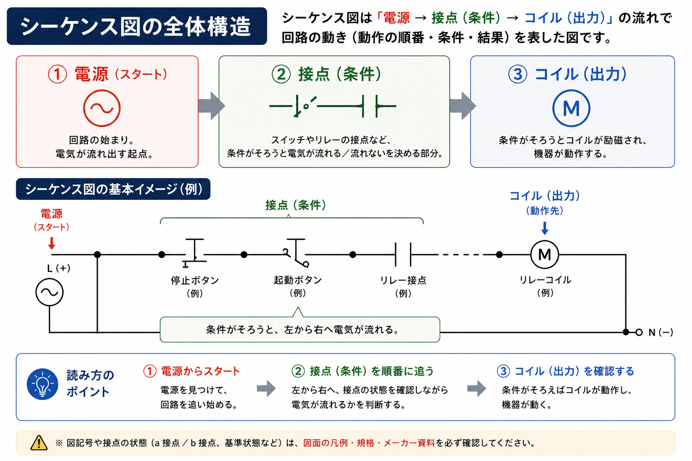
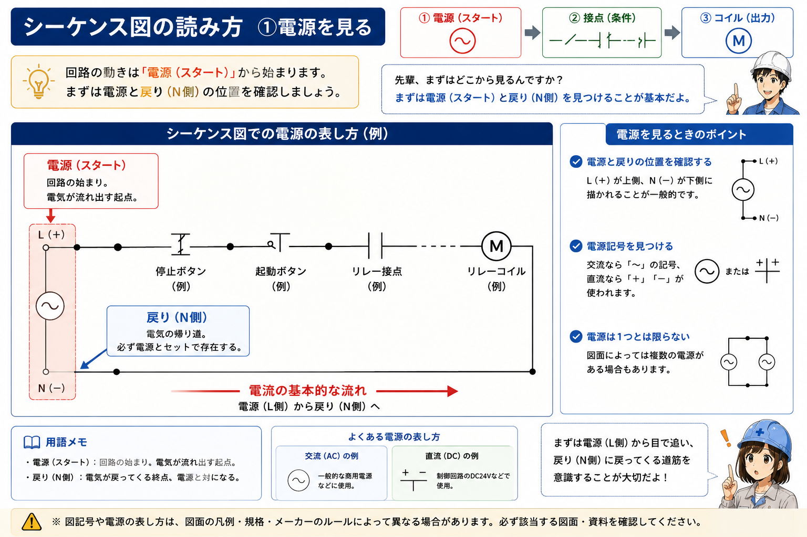
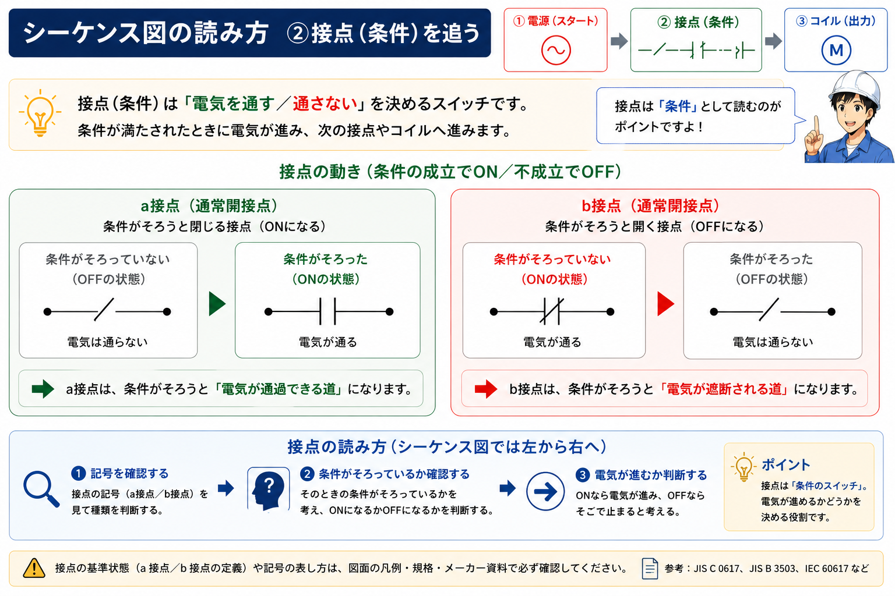
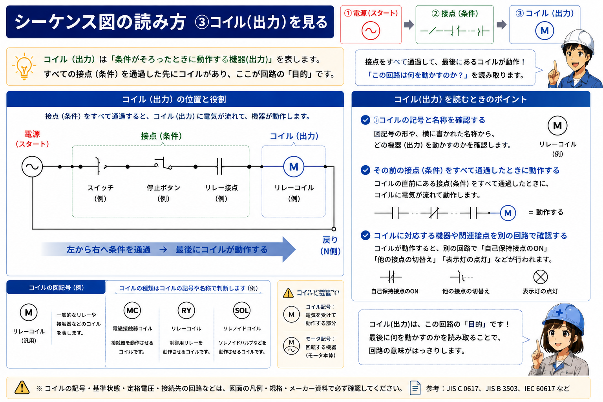
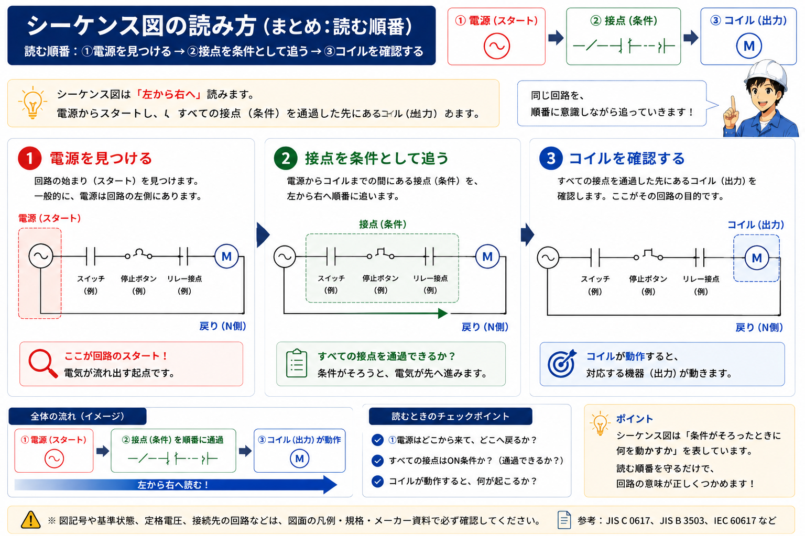

シーケンス図は「条件と動作の関係」を表す
シーケンス図は、制御回路の中でどの条件がそろうと、どの機器や機能が動作するのかを整理して表す図面です。押しボタン、リレー、センサ、電磁接触器などの要素が、接点やコイルなどの記号で表されます。


後輩記号は少し分かってきたんですけど、シーケンス図になると、どこから読めばいいのか迷います……。

先輩最初から全部読もうとしなくて大丈夫。まず電源を見て、接点を「条件」、その先のコイルを「動作先」として順番に整理すると読みやすいですよ。
電源
回路をどこから見るかを決める起点です。
接点
動作するために必要な条件として整理します。
コイル
条件がそろった先にある動作先を読み取る手掛かりです。
最初に電源と回路の範囲を見る
初めから接点を一つずつ追うより、まず電源表記と回路の区切りを確認します。どこを起点に読む回路なのかが分かると、その後に並ぶ接点やコイルの関係を整理しやすくなります。

電源表記を思い込みで決めない
AC・DC、電圧、共通線などの表し方は図面や設備によって異なります。正式な図面の注記や凡例を優先します。
接点は「動作するための条件」として読む
シーケンス図に並ぶ接点は、回路が成立するための条件として見ると理解しやすくなります。複数の接点がある場合も、一つずつ「何に対応する接点か」を識別情報と合わせて整理します。

a接点・b接点、NO・NCは基準状態も見る
呼び方だけで状態を断定せず、その図面がどの状態を基準に描いているか、凡例・注記・適用規格・メーカー資料なども確認します。
コイルは「条件がそろった先」を見る手掛かり
接点を追った先にあるコイルは、条件が成立したときに関係する動作先を読み取る手掛かりになります。リレーや電磁接触器などでは、コイルと関連する接点に対応を示す文字や番号が付くことがあります。

基本は「電源 → 接点 → コイル」の順で整理する
初心者のうちは、①電源を確認 → ②接点を条件として見る → ③その先のコイルを確認という順番を決めておくと、図面全体を一度に理解しようとするより迷いにくくなります。

後輩一枚の図面を一気に理解するんじゃなくて、一つの回路ずつ追えばいいんですね。
先輩そうです。起点・条件・動作先を分けて見ると、複雑に見える図面でも関係を整理しやすくなります。
読み順は学習用の基本
「電源 → 接点 → コイル」は、一般的な制御回路を整理するための読み方です。図面の形式や回路構成によって配置・読み方は異なるため、実際の図面では凡例、注記、適用規格、メーカー資料、設備ごとの設計ルールを優先してください。
1. 起点
電源と回路の範囲を確認します。
2. 条件
途中にある接点が何を表すか整理します。
3. 動作先
接点の先にあるコイルや機能を確認します。
文字・番号・参照情報で離れた関係をつなぐ
シーケンス図では、同じ機器に関係するコイルと接点が離れた場所に描かれることがあります。そこで文字記号、番号、クロスリファレンスなどの識別情報を手掛かりにします。
「この接点はどの機器に関係するのか」「このコイルに対応する接点はどこか」という視点で見ると、回路同士の関係を整理しやすくなります。
図面学習と実設備の作業は分ける
この記事は図面を読むための基礎知識です。実設備での工事、配線変更、通電確認、測定などは、必要な資格・教育・権限のもとで、正式図面、メーカー資料、設備の安全ルールに従ってください。
まとめ：一つの回路を順番に追う
シーケンス図は、記号をすべて暗記してから読む必要はありません。まず電源 → 接点 → コイルの順で一つの回路を整理し、文字や番号から関連する要素を結び付けるのが基本です。
No.5 → No.6 → No.7でつなげる
「電気図面の種類」→「図記号・文字記号」→「シーケンス図の読み方」の順に学ぶと、図面全体から個別の制御回路へ段階的に進めます。